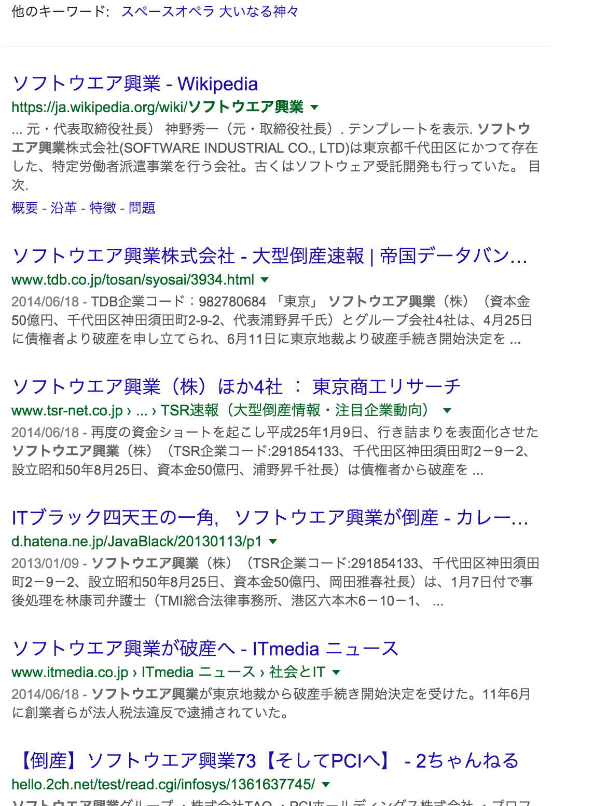
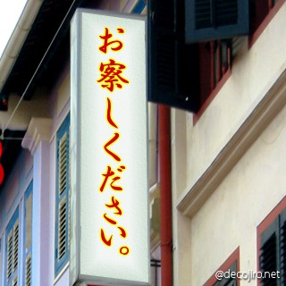
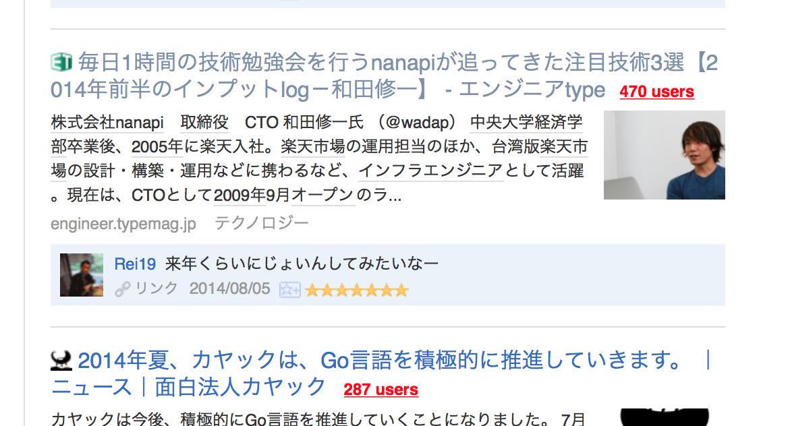
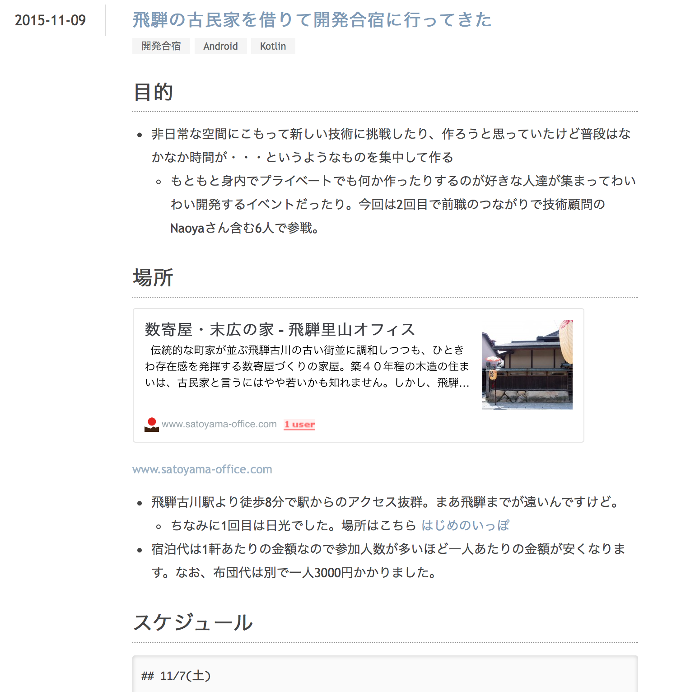

- 本日のアジェンダ
- 1) いままでなにやってたの？
- 2) 入ることになったきっかけ
- 3) いま、なにやってんの？
- 4) プライベートのこととか
1) いままでなにやってたの？
大学時代
・獨協大学の法学部で過ごす。まだITと出会ってない。
・FF11が生活。
・就職活動ではじめてIT業界でものつくりしようと思ってSIerへ
・FF11が生活。
・就職活動ではじめてIT業界でものつくりしようと思ってSIerへ
１社目
・新卒でソフトウエア興業というところにはいる
今現在、社名でぐぐってみると。。。


これだけだとあんまりなので。。。
・２年半くらい、でかい銀行（よくCMにサザエさんがでてくる）のプロジェクトで働いてました。
・内容はばらばらでkshとVBSでスクリプトを書いてJP1で回すとか、ADを使ったお店の人のアカウント管理システムをASP.netで作ったりとか。なんかいろいろやりました。
・内容はばらばらでkshとVBSでスクリプトを書いてJP1で回すとか、ADを使ったお店の人のアカウント管理システムをASP.netで作ったりとか。なんかいろいろやりました。
２社目
・Web業界で働こうと思い一休に入る
関わったこと
- 一休.com レストランの追加開発
- 一休.com レストランのガラケサイト作成
- 一休.com レストランのスマートフォンサイト作成
- 一休.com レストランのAndroidアプリ作成
- 一休コミュニケーションの立ち上げ（もうクローズ済）
- 一休全体の認証基盤リニューアル
- 寿司好きな技術顧問と組織改善
まれに露出
だいたいこんな感じ
2) 入ることになったきっかけ
@wadap さんに誘われた
もともと何かの勉強会で知り合って、たまに会社の開発の相談してたり。一休を辞めるタイミングでCTOランチ（だったっけ？）で話す機会があって、今度辞めるんですよーっと話してたら、うちどうですか！という流れでそのまま入っちゃったという感じ。もともとnanapiは面白そうな組織だなーと思ってたし飛び込んでみました。
予言されていた未来（すっかりわすれてた）

3) いまなにやってんの？
Amigoのフロントをがりがり書いてます。
おもしろいサービスに育てたい。
おもしろいサービスに育てたい。
4) プライベートのこととか
- ・3年前に結婚。子供はまだいないです。
- ・去年、家を買う@南林間。遊びに来てね！
- ・休みはだいたいプライベートでコード書くか、ゲームやらアニメやら漫画やら（休みは嫁いないこと多い）
- ・アニメはFate最高なので見ましょう。ゲームは最近はシュタゲ0注文したので年末のお供に。昔から好きなのはスパロボとか。多分メインハードで出てるシリーズはだいたいクリアしてます。
- ・旅行好き。結婚する前は一人でぷらっと旅にでたりしてました。遠いところへ旅に出つつコードを書く開発合宿最高です。
直近の開発合宿の様子


これからよろしくおねがいします！